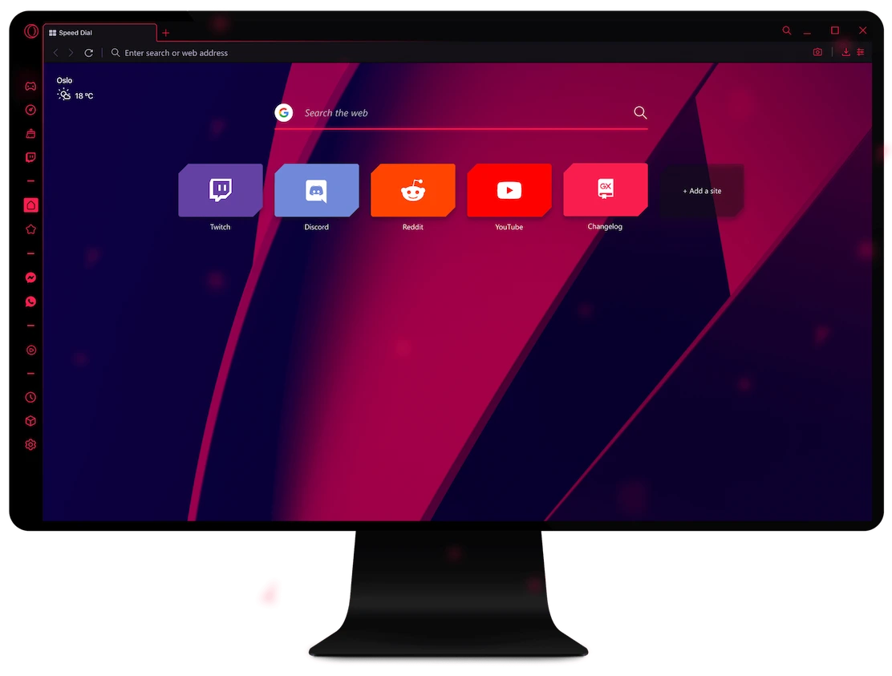
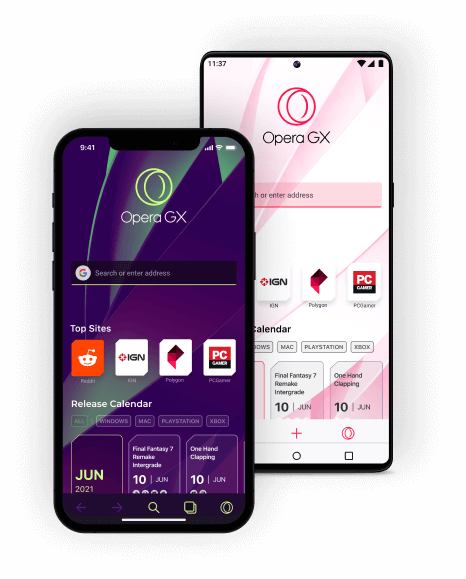
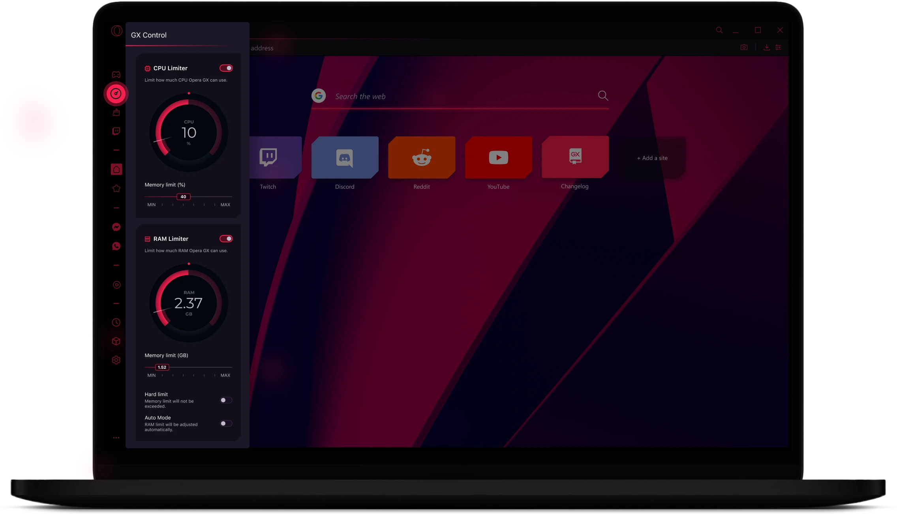

Le navigateur des
joueurs
Bénéficiez d'une expérience de jeu et de navigation inégalée sur le mobile et le bureau. Fixez des limites d'utilisation du processeur, de la RAM et du réseau, utilisez Discord et Twitch depuis la barre latérale et connectez les navigateurs mobiles et de bureau avec la fonction de partage de fichiers Flow.


Qu’est-ce qu’Opera GX ?
Opera GX est une version spéciale du navigateur Opera conçue spécialement pour les joueurs. Le navigateur comprend des fonctionnalités uniques telles que des limiteurs d’unité centrale, de mémoire vive et de réseau pour vous aider à tirer le meilleur parti de vos jeux et de votre navigation.
